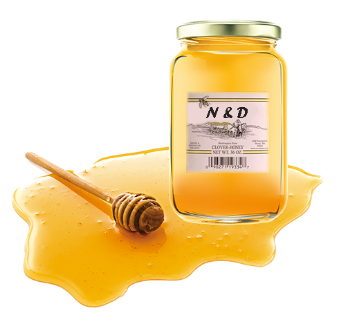

Još od postanka čovek je koristio med kao hranu, a pored toga što predstavlja jedno od najstarijih pčelinjih proizvoda u ljudskoj ishrani, poznata su i njegova lekovita svojstva. I danas se koristi u farmaciji. Sam ili združen s drugim preparatima (npr. limunom, renom, propolisom, polenom itd.) ili napitcima med ima izuzetno povoljno dejstvo na mnoge organe u organizmu. Blagotvorno dejstvo meda na bolje funkcionisanje organizma je dokazano i ono je izuzetno a o njegovim prednostima u ljudskoj ishrani mogli bi posvetiti jednu posebnu knjigu.

Korisna svojstva meda:
Izvor Energije
Poboljšava imunitet
Med poboljšava krvnu sliku
Pospešuje zarastanje rana
Pomaže kod nesanice